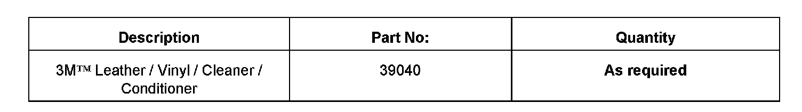

Interior - Cleaning Tips for Leather Upholstery
70 07 07Aug. 10, 2007
2002345 Supersedes T.B. Group 70 number 01-01 dated Aug. 16, 2001 due to updated models, model years, part number change and inclusion into ElsaWeb.
Vehicle Information
Condition
Interior, Cleaning Tips for Leather Upholstery
Leather upholstery dirty or stained.
Technical Background
Information only
Production Solution
No production change required.
Service
Note:
Headrests, armrests which are exposed to perspiration, may require cleaning more often.
Avoid solvents, wax, polish, shoe cream, spot removers, household cleaners, etc. These cleaners will likely damage the finish, affect the color and lead to premature aging of the leather.
For cleaning interior fabrics, vinyls and plastics see Technical Bulletin 2002407.
Normal Cleaning
Use plain water and a soft, non-pigmented cloth or sponge.
Wring water out of cloth or sponge (should be damp, not wet) and wipe over surface. DO NOT allow water to soak into or penetrate seams.
Wipe off with a soft dry cloth.
Stubborn Dirt
Note:
Always read and follow manufacturer Cautions and Warnings regarding use of product
Always test product in an inconspicuous area prior to using in visible areas.
Use a small amount of liquid soap such as Ivory or Murphy's oil soap or equivalent in a quart of water.
Using soapy water, moisten a soft, non-pigmented cloth or sponge. A 3M Scotch-Brite Type T Scuff Sponge (3M Part No. 07439) or equivalent can also be used.
Wring water out of cloth or sponge (should be damp, not wet) and wipe over surface. DO NOT allow water to soak into leather or penetrate seams.
Wipe off with a soft dry cloth.
Stubborn Stains
Use lukewarm water to dilute water-soluble stains
Use small amount of liquid soap such as Ivory or Murphy's oil soap in a quart of water.
Remove excess grease immediately with a soft cloth or paper towel.
Moisten a soft, non-pigmented cloth or sponge with water for water soluble stains or soapy water for greasy stains.
Work area larger than the stain, liberally dab the stain. Work inwardly towards the stain, and then outwardly from the stain. Dampen the area but avoid soaking the leather.
Use a clean cloth or sponge to absorb the liquid.
Allow leather to air dry.
When leather is dry, polish with a dry soft cloth. A certain amount of grease will absorb into the leather and disappear of its own accord.
Conditioner
Conditioners provide a physical barrier against surface soiling and abrasion, and a degree of gloss to enhance the leather's appearance.
Several times a year use a specially formulated 3M Leather / Vinyl / Cleaner / Conditioner Part No. 39040 or equivalent.
Note:
Cleaning leather upholstery IS NOT covered under the New Vehicle Warranty.
Warranty
Information only

Required Parts and Tools
No Special Tools required.
Additional Information
All part and service references provided in this Technical Bulletin are subject to change and/or removal.
Always check with your Parts Dept. and Repair Manuals for the latest information.